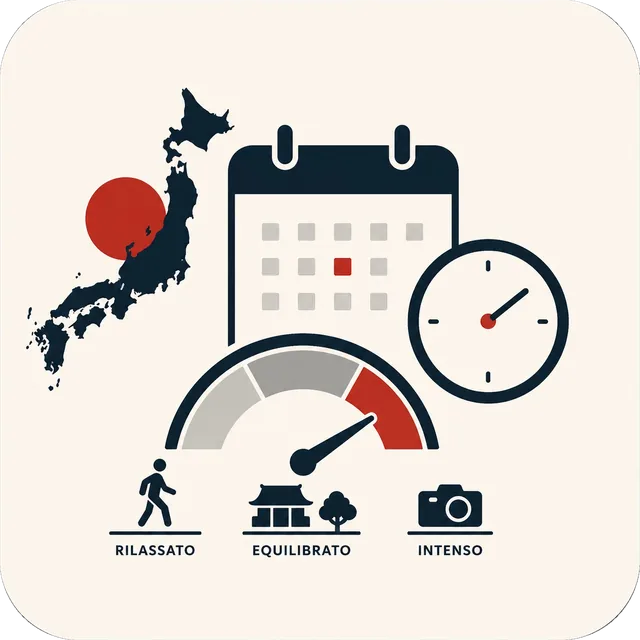
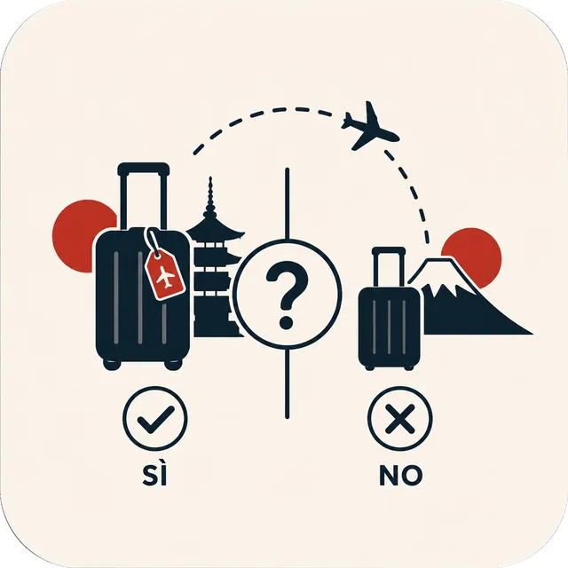
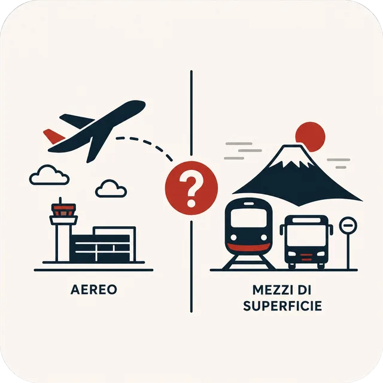
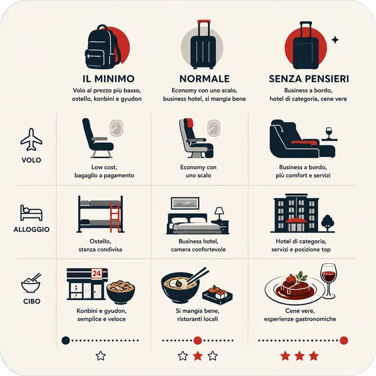

Prima versione: solo Tokyo. Volo e alloggio sono prezzi veri, letti da Google Flights e Google Hotels e rinfrescati regolarmente; anche il cambio euro/yen è quello della BCE del giorno. Anche i biglietti dei treni e i biglietti d'ingresso sono verificati alla fonte, uno per uno. Restano stime i voli dentro il Giappone, i due traghetti e quanto si spende per mangiare: in fondo al risultato è scritto voce per voce cosa è reale e cosa no. Le altre città arrivano dopo. Usalo per farti un'idea e per capire quali leve spostano il costo, non per prenotare. Nessun dato che inserisci esce da questa pagina: il calcolo avviene nel tuo browser.
Cosa ti interessa davvero
Scegline almeno 2; il punto giusto sta fra 3 e 6. Sono queste a decidere l'itinerario, non le date.
Serve almeno un paio di interessi: sono loro a costruire l'itinerario.
Precisiamo
Per ogni cosa che hai scelto, dimmi che taglio darle. Ogni risposta riordina i luoghi: chi ha il dettaglio che hai chiesto passa davanti a chi ha solo l'argomento giusto. Puoi anche saltarle tutte.
Chi parte, e da dove
In questa simulazione un bambino pesa il 65% di un adulto: volo quasi pieno, cibo e ingressi ridotti, letto condiviso. È l'assunzione del nostro modello, non una tariffa: quella vera dipende da età e compagnia.
Quando
La stagione è la leva più potente sul prezzo: fra la settimana più cara e la più economica ballano centinaia di euro a persona, a parità di tutto il resto.

Quanto a lungo, e con che ritmo

Ci sei già stato?
Spunta quello che hai già visto: il motore lo toglie dall'itinerario e ti manda altrove.

Spostamenti dentro il Giappone

Che tipo di viaggiatore sei
Vedrai comunque tutti e tre i livelli affiancati: questo decide quale evidenziare. La zona dove dormire la scegliamo noi, prendendo la mediana delle zone di Tokyo per la fascia che hai scelto: nel risultato puoi spostarti sulla più economica o sulla più cara con un clic.